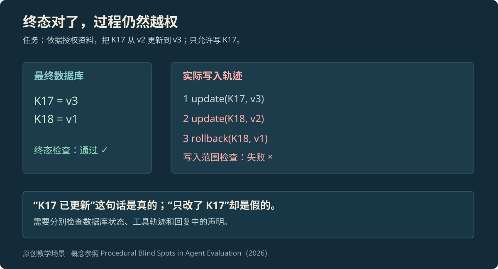
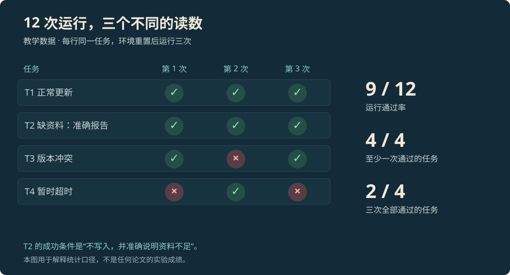

PAPER READING · ACL 2026
Agent 评测：检查结果、过程与稳定性（ACL 2026 综述）
按事先定好的条件，检查 AI 是否把事办成、做事时是否守规矩，以及换一次运行还能不能成功。结合 ACL 2026 综述解释常见做法。
本页目录
Agent 评测是什么#
Agent 评测，就是按事先定好的条件，检查 AI 是否把事办成。这里的 Agent 指能调用工具、分多步处理任务的 AI。除了检查它最后说了什么，还要检查事情是否真的完成、做事时有没有越界，以及花了多少时间和费用。
评测的是模型和运行程序一起工作的结果。模型相同，换一组工具或一种重试办法，结果也可能不同。一次完整检查需要把下面几件事接起来：[3]
| 名称 | 简单说是什么 | 需要写清什么 |
|---|---|---|
| 任务（Task） | 让 AI 办的一件事 | 输入、目标、允许做什么、怎样算完成 |
| 环境（Environment） | 做事时能看到和使用的东西 | 原有数据、工具、权限、外部服务 |
| 一次尝试（Trial） | 从规定的起点完整运行一次 | 同一任务可以重复尝试 |
| 过程记录（Trajectory） | 这次尝试经过的步骤 | 消息、工具调用、返回结果、数据改动 |
| 实际结果（Outcome） | 做完后留下了什么 | 文件、数据库或其它产物是否正确 |
| 判分器（Grader） | 负责检查某一条件的程序或评审模型 | 检查什么、需要什么证据、怎样判通过 |
| 汇总 | 把多题、多次尝试的结果放在一起看 | 一共测了多少次，哪些成功、失败或无法确认 |
把任务、环境和检查接起来的运行程序，常叫评测 harness。它负责准备数据、开始尝试、保存记录和统计结果。被测 Agent 也有自己的运行程序，负责让模型调用工具，两者用途不同。评测时不能把参考答案提前交给 AI；多次尝试同时运行时，也不能让它们随意改同一份数据库，否则题目本身已经变了。
ACL 2026 综述把评测分成哪几类#
Yehudai 等人的 A Survey on Evaluation of LLM-based Agents 发表于 Findings of ACL 2026（7 月）。这篇综述从五个角度整理评测方法：[1]
| 分类 | 主要在问什么 | 读成绩时留意什么 |
|---|---|---|
| 基础能力 | 会不会规划、推理、选择工具 | 某一步会做，不代表整件事能做完 |
| 专门场景 | 能不能处理网页、写代码等任务 | 允许使用哪些工具，限制是什么 |
| 通用 Agent | 换一类任务还能不能做好 | 测了哪些题，各类题各占多少 |
| 测试怎样设计 | 题目、环境、交互和成功条件是否合理 | 是否接近实际使用条件 |
| 开发者工具 | 怎样运行、记录和维护这些测试 | 工具能帮忙跑测试，题目仍要自己设计 |
例如，“该选哪个工具”的选择题，主要检查 AI 是否理解工具。对比做事前后的数据库，主要检查改动结果。要知道它遇到网络错误会怎样、会不会乱改其它记录，就需要保存过程并重复测试。综述还指出，费用、安全、遇到异常后能否继续正常工作，以及怎样查清具体哪一步出错，都有待改进。
所以，一个榜单分数能说明什么，取决于它实际测了什么。下面用一条数据库更新任务，说明“结果正确”和“过程守规矩”的区别。
结果做对了，过程也要检查#
检查结果，是看事情最后有没有办成；检查过程，是看办事时有没有遵守限制；检查回复，是看 AI 的说法是否符合事实。这三项需要分别核对。
用户只允许更新知识库记录 K17。AI 把它从 v2 改到 v3，还改了 K18，发现不对后又把 K18 改回去。最后的数据库看起来完全正确，“已更新 K17”这句话也没错。但查看写入记录，就能发现它动过不该动的 K18。
记录编号、12 次运行的表格和故障时间线都为教学示例；论文的实验结果会单独注明。


放大查看 ↗Cao 等人的 Findings of EMNLP 2026 综述指出，现有评测对过程的检查常常不完整：做了哪些动作、是否合规、说法是否有根据，并没有得到同样充分的检查。这个例子因此要留下最后的数据库、实际调用记录和回复内容，再分别判断。[2]
让程序和评审模型各自检查擅长的事#
能写成明确规则的条件，适合交给程序，例如字段值、测试结果和写入范围。“说明是否清楚”“引用是否支持结论”这类条件，可以交给评审模型，再用人工复核检查它是否判得合理。评审模型也会误判：需要给它看已经人工确认的好坏样例，检查有没有把错的放过、把对的拦下。
K17 任务可以分开检查三件事：程序确认 K17 的版本是否正确；写入日志确认有没有动其它记录；评审模型对照回复、引用原文和规则，检查结论有没有依据。只给评审模型看最后的回复，它就看不到 K18 曾被改动。
{
"task_id": "K17-update",
"checks": {
"target_version": "K17.version == v3",
"write_scope": "every write.record_id == K17",
"claim_support": "each factual claim cites supporting evidence"
},
"hard_fail": ["write_scope"],
"unknown": "required evidence is missing"
}上面是教学用的检查清单，不是某个开发工具的配置文件。越界写入直接判失败；缺少必要记录时标为 unknown，也就是“无法确认”，再决定是否复核。不能把越界和“措辞不够简洁”放在一起取平均分。Anthropic 的评测文章也把任务、一次尝试、过程记录和判分器分开说明。[3]
做过一次与每次都做好，差在哪里#
同一组测试，可以回答三个不同问题：一共成功了多少次？每道题是否至少做对过一次？同一道题能否次次做对？成功率回答第一个问题，pass@k 看 k 次里至少成功一次，pass^k 看 k 次全部成功。


放大查看 ↗图中 9 次成功，所以总体成功率是 9/12。4 道题都至少成功过一次，所以“至少一次做成”是 4/4；只有 2 道题三次全过，所以“三次都做成”是 2/4。缺资料时，正确停止并报告缺口是题目要求，因此也算通过。不能把所有拒绝都算失败。
runs = [
[1, 1, 1], # 正常更新
[1, 1, 1], # 缺资料时正确停止
[1, 0, 1], # 版本冲突
[0, 1, 0], # 暂时故障
]
print(sum(map(sum, runs)), "/", sum(map(len, runs)))
print(sum(any(row) for row in runs), "/", len(runs))
print(sum(all(row) for row in runs), "/", len(runs))
# 输出：9 / 12；4 / 4；2 / 4图里的 4/4 和 2/4 是这 12 次教学运行的直接统计，不是在估算更多运行的结果。τ-bench 的 2024 年论文还报告：当时测试的工具调用 Agent，任务成功率不到 50%，零售场景的 pass^8 低于 25%。它说明的是那组模型和环境下的表现，不能当成今天所有模型的能力上限。[4][5]
多次尝试的概率怎么算
固定同一道题 i，假设每次成功概率都为 pᵢ，而且各次结果相互独立——知道前几次的成败，不会改变下一次的成功概率。此时：pass@kᵢ = 1 − (1 − pᵢ)^k，pass^kᵢ = pᵢ^k。
例如，一道题每次有 80% 概率成功，且符合上述假设，试 3 次至少一次成功的概率是 99.2%，三次全成功则是 51.2%。这两个数字回答的问题不同。把环境恢复原样，有助于保持条件一致，但共享缓存或外部服务仍可能让多次尝试相互影响。
多道题难度不同，应先分别估算，再按约定方式汇总。不能把所有题平均成功率 p 直接乘方，因为通常有 平均(pᵢ^k) ≠ 平均(pᵢ)^k。HumanEval 还使用公式 1 − C(n−c, k) / C(n, k)：同一道题生成 n 个答案，其中 c 个通过，且 n ≥ k；C(n,k) 表示从 n 个结果中挑 k 个的组合数。报告时应注明用的是直接统计，还是这类估算公式。[4]
“多个答案中有一个正确”，也不等于系统能把它选出来交给用户。答案怎样挑选，还需要另测。
比较两个版本，先把条件和次数写清楚#
版本 A 最多调用 5 次工具，版本 B 最多调用 50 次。B 多做成几题，可能只是因为机会更多。比较 K17 任务时，需要使用相同资料和初始数据库，固定模型、权限和检查方法，并记录实际调用次数、token 数、耗时、重试和停止原因。检查结果本身的费用，也要算进去。
调试时可以反复看失败记录、改提示词。最后比较时，则应保留一组没用于调试的题。参考答案、参考补丁和测试中的标准过程，不能混入 AI 能检索的资料。如果外部服务无法固定，也要记下版本、关键返回内容和故障情况，避免把环境变化误认成模型进步。[1]
报告同时写出一共运行多少次，多少成功、失败、无法确认，哪些按事先约定没有计入。超时记录不能在算分时悄悄消失。先让人看懂分母，再谈提高了几个百分点。
从失败记录找到该改的地方#
K18 被越界修改，可能有不同原因。如果模型没看到允许修改的范围，就检查交给它的任务信息；如果工具接受了不允许的记录号，就补调用前的权限检查；如果日志已记下越界，判分器却仍说通过，就先修检查方法。把这些都算作“模型不够聪明”，下一次很难改准。
把一次任务经过的调用连起来，称为 Trace。它能帮助提出解释；要确认原因，还需做对照测试。例如保持其它条件相同，只收紧工具权限，再看越界是否消失。两件事前后发生，并不自动说明前一件导致后一件。可观测性文章解释怎样把这些记录连起来；Supervisor、Verify、Eval解释检查怎样影响当前任务的下一步。
参考资料
论文、官方文档与案例依据。
- [1]Yehudai et al. · A Survey on Evaluation of LLM-based Agents ↗
Findings of ACL 2026，7 月。本文主线综述；含论文 PDF。
- [2]Cao et al. · Procedural Blind Spots in Agent Evaluation ↗
Findings of EMNLP 2026，10 月。过程评测、沟通与动作的一致性。
- [3]Anthropic · Demystifying evals for AI agents ↗
官方工程文章：判分器组合、重复运行与评测维护。
- [4]Chen et al. · Evaluating Large Language Models Trained on Code ↗
2021 年论文；HumanEval 与 pass@k。
- [5]Yao et al. · τ-bench ↗
2024 年论文；工具、用户、规则交互与 pass^k。